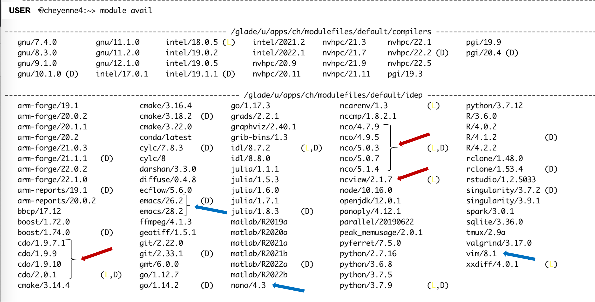

Prerequisites for Success#
NOTE: Although the materials and notebooks in this tutorial are published as a Jupyter Book, you will need to use a terminal window to actually run the commands presented in this tutorial.
To successfully complete this tutorial you will:
Utilize a terminal window
Issue commands at the command line using UNIX
Need to be able to access and run on the NCAR HPC assets (HPC = High Performance Computing)
Use JupyterHub for some basic diagnostic plotting
The links below provide more information about these topics. If you are not familiar any of the four topics above, we strongly recommend that you read through the following sections.
Terminal windows#
For most of these tutorial exercises, we assume that you will use the online documentation in tandem with an open terminal window. The commands described in these materials will be entered at the command line in your terminal window.
If you are unfamiliar with opening terminal windows, we suggest you use the link below to learn more about terminal windows.
UNIX#
The commands described in these materials will be entered in a UNIX environment. If you are unfamiliar with navigating a UNIX environment, we suggest you use the link below to learn more about UNIX.
NCAR High Performance Computing (HPC)#
X11#
X11 forwarding is an SSH protocol that enables users to run graphical applications on a remote server and interact with them using their local display and I/O devices. It is frequently used by CESM developers for securely interacting with NCAR HPC remote machines.
When you log in to the NCAR HPC machines, we recommend you use X11 forwarding. You can do this by adding the -XY option when logging into the machines with SSH. More information about logging into the NCAR HPC follows below.
ssh -XY username@cheyenne.ucar.edu
OR
ssh -XY username@casper.ucar.edu
Running on Cheyenne#
This tutorial material is designed for use with the Cheyenne HPC system. All of your CESM experiment builds and jobs will be run on Cheyenne.
Please see the link below for more information about the Cheyenne system, including a quick start guide with information about logging into Cheyenne from a terminal, setting up your environment, submitting jobs, etc.
Porting#
This tutorial assumes that you are using NCAR HPC assets. In order to run the CESM on a different computing platform, you will first need to port the CESM code to that environment/machine. We provide information about how to port the model code in the porting section.
Using Casper#
The Casper cluster is a system of specialized data analysis and visualization resources. Casper is not used for building or running CESM, but it is used for CESM data analysis. We will use Casper for the diagnostics section of the lab activities. To utilize the additional analysis tools described in the analysis tools section you will also want to use Casper.
Using JupyterHub#
The diagnostics section of this tutorial will use JupyterHub to run Jupyter Notebooks. You will need to login to the NCAR JupyterHub system to run the notebooks successfully.
NOTE: To run a Jupyter cell
Type your command into the cell
To execute the command:
Press shift+return
OR- Select the cell then click the 'play' button at the top of the windowTo learn more about JupyterHub, please follow the link below.
Modules on NCAR HPC#
NCAR maintains a number of different programs on the HPC systems that can be added to your user environment by executing the
module loadcommand.We will use a few modules throughout this tutorial to visualize data, so you need to be able to check which modules you have loaded and to load necessary modules.
We provide basic instructions below on how to check and load Modules, but to learn more about Modules on NCAR HPC, please follow the link below.
Checking what modules are loaded in your environment#
To check what modules you have loaded in your environment, use the following at the command line:
module listChecking what modules are available#
You can see which modules are available on the HPC resources by using the following at the command line:
module availThe command returns a list to the terminal window of the modules available to load to your environment.

Figure: Some modules available on NCAR HPC resources. D: Default Module. L: Module is loaded.
The modules highlighted in blue are text editors discussed further in the text editors section.
The modules highlighted in red are netCDF tools that will be discussed further in the netCDF section.
Note that there are many other analysis software tools available to load into your NCAR HPC environment. These include: idl, julia, matlab, R, python, ncl, etc. While some of these tools are discussed in the analysis tools section, we do not highlight them all here and encourage you to further explore your environment and needs.
Loading a new module to your environment#
You can load one of the available modules (here we show loading ncview) using the following at the command line:
module load ncview
NOTE: We will provide a file that will load necessary modules for those attending the in person tutorial.